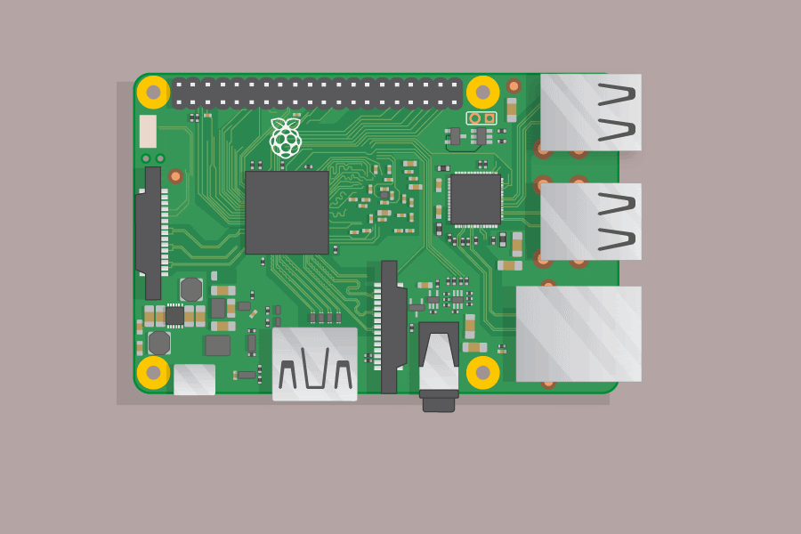
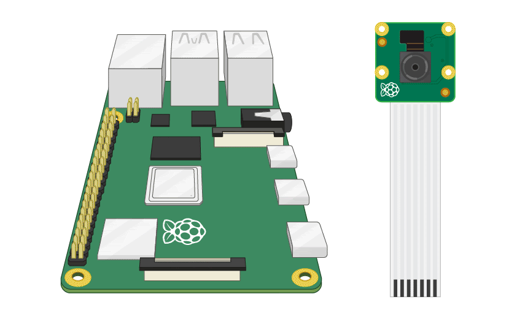
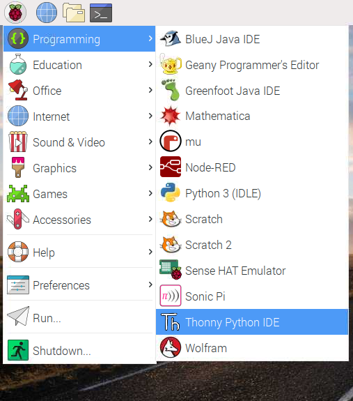
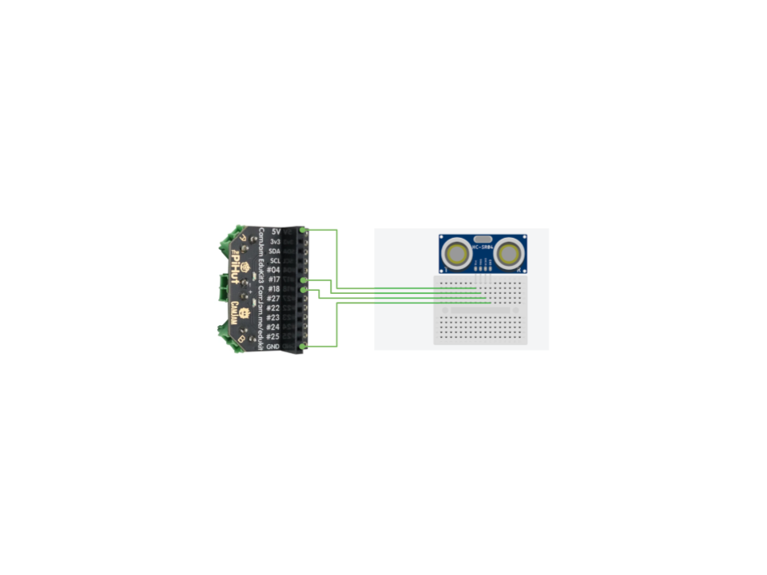

Last Updated: 2019-11-19
Throughout this class you will develop:
Your understanding of physical computing and sensors which drive automated systems.
Your understanding of:
See the image below for instructions on how to connect the Pi and the Pi camera. The camera will have already been connected for you.


Before getting started with the camera module, we will have to make sure it is enabled via the config page. To do this, you'll need to open a Raspberry Pi terminal. You can do that by following the instructions here.
sudo raspi-configInterfacing Options and select Camera. Select the option to enable the camera and reboot the Pi.Once the camera module is connected, you should be able to take a picture by entering the following command into a terminal. You should see the camera preview for 5 seconds before it disappears.
raspistill -o picture.jpgThis step allows us to control the camera module via Python. Open a Python window by following the steps below.

Enter the following code and hit run. You will have to save the file first. DO NOT SAVE THE FILE AS picamera.py.
from picamera import PiCamera
from time import sleep
camera = PiCamera()
camera.start_preview()
sleep(5)
camera.stop_preiew()Ensure you have wired up the ultrasonic sensor to the Raspberry Pi as shown in the Slide deck.

Once that is done, open a new Thonny Python IDE file and type the following code.
from time import sleep
import DistanceSensor
pinTrigger = 17
pinEcho = 18
sensor = DistanceSensor(echo=pinEcho, trigger=pinTigger)
try:
while True:
print(senor.distance)
sleep(1)
except KeyboardInterrupt:
print(‘Exiting')Type the following into the Python Thonny IDE window and hit run. Most of this can be copied and pasted from the other codes you have written previously.
from picamera import PiCamera
from gpiozero import DistanceSensor
from time import sleep
pinTrigger = 17
pinEcho = 18
sensor = DistanceSensor(echo=pinEcho, trigger=pinTrigger)
camera = PiCamera()
camera.rotation = 180
try:
while True:
print('Distance:')
print(sensor.distance)
sleep(0.5)
if sensor.distance < 1.0:
print('Motion detected! Taking picture.')
camera.capture('/home/pi/Desktop/image.jpg')
print('Picture captured! Check the desktop.')
sleep(0.5)
except KeyboardInterrupt:
print('Exiting')Use the code #sensors.
Congratulations, you have reached the end of the tutorial. Good luck!
If you have any questions, please contact Scott Morgan | smorgan@bridgend.ac.uk.
Next steps:
If you're interested in this, you should learn:
See more info in the Slide deck.
Resources & Further Reading: